KalkiFit dizayn 2 — maket
1-bosqich: faqat maket va skrinshotlar (390 px, 2×). Ilovaning o'zi o'zgarmagan. Tasdiqlansa — 2-bosqichda butun ilovaga qo'llanadi.
Jonli maket (och/qorong'i, katta shrift)
Bugun (to'la kun)

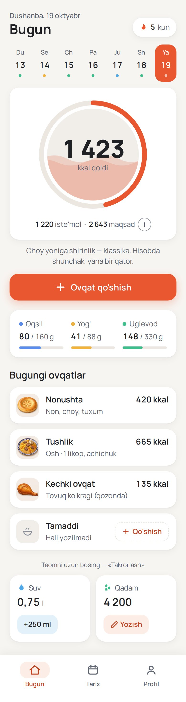

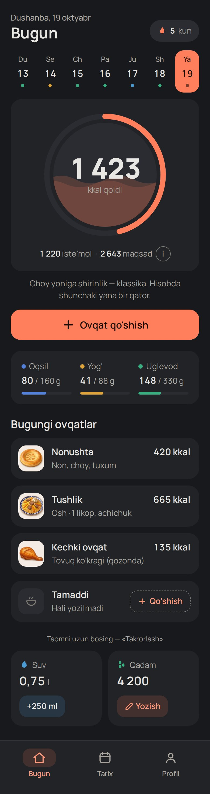
Bugun (bo'sh kun)

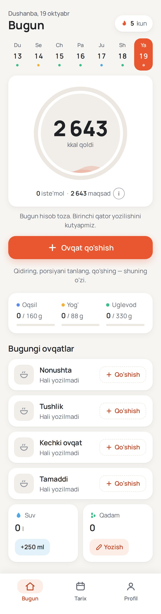

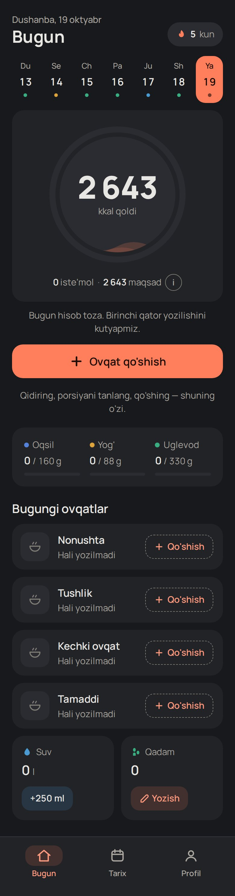
Ovqat qo'shish

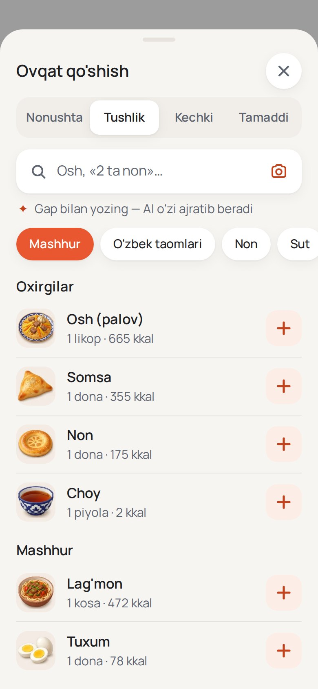

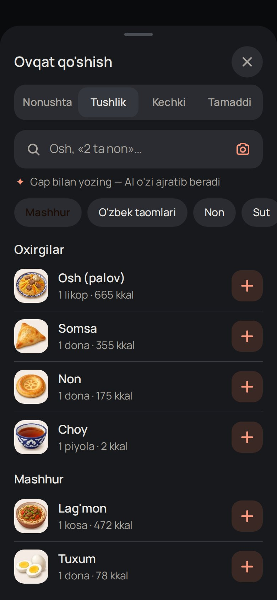
Porsiya

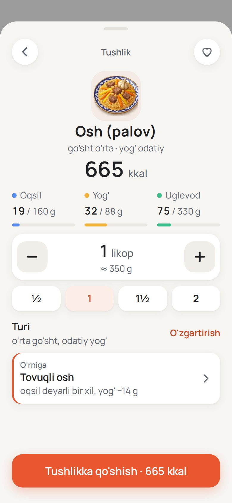

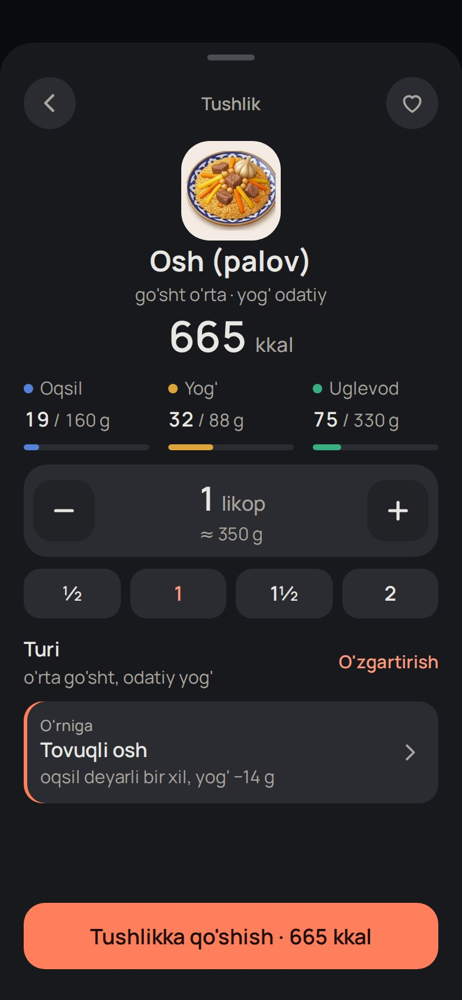
Tarix

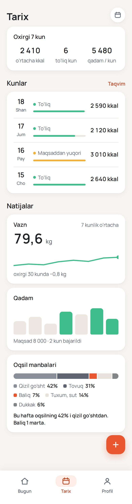

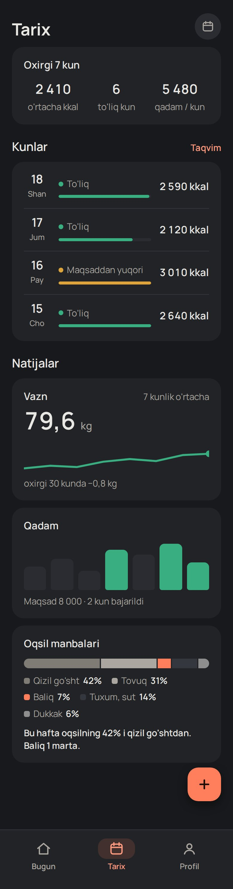
Profil

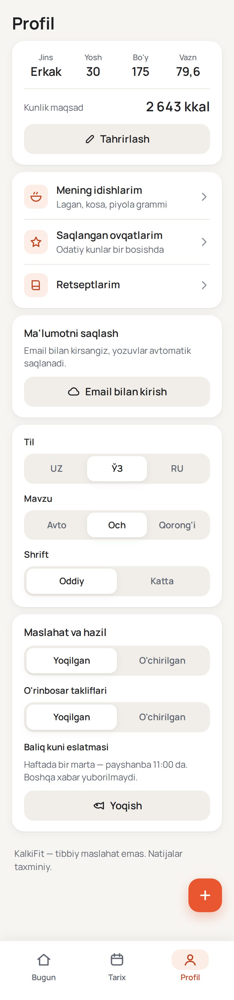

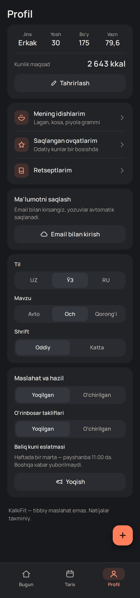
«Bugun» — AA-tavsiya tokenlari bilan
Spetsifikatsiyadagi 4 ta qiymat o'z talablaringizni (AA ≥ 4,5; qorong'ida ≤ 13:1) biroz buzadi — quyida jadval. Taqqoslash uchun «Bugun» tavsiya variantida:

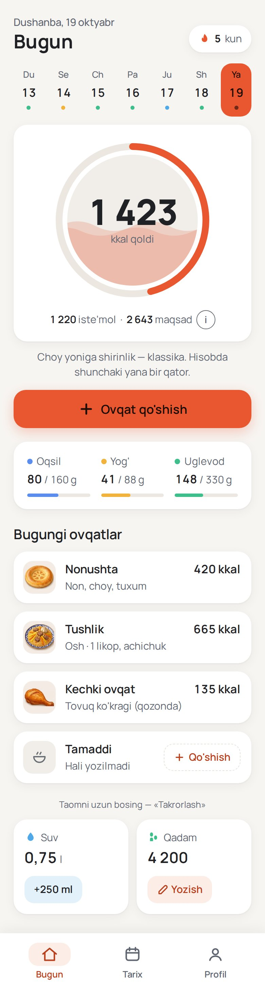

Katta shrift (+2 px) — Bugun, och

Kontrast jadvali (WCAG 2.x)
Qizil qatorlar — spetsifikatsiya qiymatlarida muammo. «AA-tavsiya» ustuni — o'zgargan qiymat va yangi kontrast.
Och
| Juftlik | Rang | Kontrast | Holat | AA-tavsiya |
|---|---|---|---|---|
| Asosiy matn / fon | #1F2125 | 14.82 : 1 | AA ✓ | — |
| Asosiy matn / karta | #1F2125 | 16.12 : 1 | AA ✓ | — |
| Asosiy matn / karta-2 | #1F2125 | 13.93 : 1 | AA ✓ | — |
| Ikkinchi matn / fon | #5E6470 | 5.46 : 1 | AA ✓ | — |
| Ikkinchi matn / karta | #5E6470 | 5.94 : 1 | AA ✓ | — |
| Ikkinchi matn / karta-2 | #5E6470 | 5.14 : 1 | AA ✓ | — |
| Xira matn (sub2) / fon | #8A909A | 2.95 : 1 | AA ✗ | #676C73 → 4.86 |
| Xira matn (sub2) / karta | #8A909A | 3.21 : 1 | 3–4,5: faqat katta matn/belgi | #676C73 → 5.29 |
| Xira matn (sub2) / karta-2 | #8A909A | 2.78 : 1 | AA ✗ | #676C73 → 4.57 |
| Tugma matni / accent | #FFFFFF | 3.60 : 1 | 3–4,5: faqat katta matn/belgi | #1C0C06 → 5.28 |
| Accent-matn / fon | #C2441F | 4.66 : 1 | AA ✓ | #B93F1D → 5.09 |
| Accent-matn / karta | #C2441F | 5.07 : 1 | AA ✓ | #B93F1D → 5.54 |
| Accent-matn / yumshoq fon | #C2441F | 4.45 : 1 | 3–4,5: faqat katta matn/belgi | #B93F1D → 4.86 |
Qorong'i
| Juftlik | Rang | Kontrast | Holat | AA-tavsiya |
|---|---|---|---|---|
| Asosiy matn / fon | #E9E7E3 | 14.23 : 1 | AA ✓ · 13:1 dan oshadi · >13:1 | #DEDCD8 → 12.84 |
| Asosiy matn / karta | #E9E7E3 | 12.74 : 1 | AA ✓ | #DEDCD8 → 11.49 |
| Asosiy matn / karta-2 | #E9E7E3 | 11.31 : 1 | AA ✓ | #DEDCD8 → 10.20 |
| Ikkinchi matn / fon | #ABA7A0 | 7.34 : 1 | AA ✓ | — |
| Ikkinchi matn / karta | #ABA7A0 | 6.57 : 1 | AA ✓ | — |
| Ikkinchi matn / karta-2 | #ABA7A0 | 5.83 : 1 | AA ✓ | — |
| Xira matn (sub2) / fon | #7F7C76 | 4.22 : 1 | 3–4,5: faqat katta matn/belgi | #96938D → 5.74 |
| Xira matn (sub2) / karta | #7F7C76 | 3.78 : 1 | 3–4,5: faqat katta matn/belgi | #96938D → 5.14 |
| Xira matn (sub2) / karta-2 | #7F7C76 | 3.36 : 1 | 3–4,5: faqat katta matn/belgi | #96938D → 4.56 |
| Tugma matni / accent | #1C0C06 | 7.60 : 1 | AA ✓ | — |
| Accent-matn / fon | #FF9A7E | 8.52 : 1 | AA ✓ | — |
| Accent-matn / karta | #FF9A7E | 7.63 : 1 | AA ✓ | — |
| Accent-matn / yumshoq fon | #FF9A7E | 6.75 : 1 | AA ✓ | — |
Xulosa. (1) Och mavzuda oq matn / #E8572F tugma = 3.60:1 — AA matn (4,5) ga yetmaydi (18 px/600 «katta matn» hisoblanmaydi: 18,66 px/700 kerak). Tavsiya: tugma matni #1C0C06 (qorong'idagi bilan bir xil) → 5.28:1, accent o'zgarmaydi. (2) sub2 ikkala mavzuda ham matn uchun AA bermaydi: faqat ikonka/chiziq/placeholder-bo'lmagan bezak uchun ishlatish yoki tavsiya qiymatlar (och #676C73, qorong'i #96938D). (3) Och accent-matn yumshoq fonda 4.45:1 — tavsiya #B93F1D (4.86:1). (4) Qorong'ida asosiy matn / fon 14.23:1 — sizning 13:1 chegarangizdan yuqori; tavsiya #DEDCD8 (12.84:1). Makro ranglar faqat nuqta/chiziq (matn emas).
Tokenlar
Maket tokenlari: dizayn2/maket.html boshidagi .m{--bg…} (och), .m[data-th=dark] (qorong'i), .m[data-tok=aa] (tavsiya). Shrift Manrope: asosiy 17/1.45, ikkinchi 15, yorliq 13 (faqat qisqa), ekran 28/700, bo'lim 20/600, karta 17/600, doira raqami 52/800. Bo'shliq 8 px grid: chet 20, kartalar orasi 12, burchak 20.